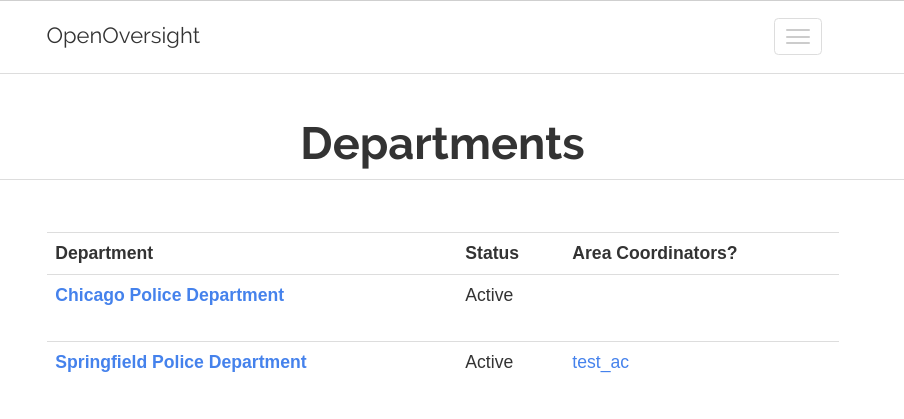

Tenth Week of RC
Day 1: Flask Pluggable Views
April 22, 2019
This afternoon I continued working on a Departments API for OpenOversight. I'm using Flask's pluggable views and starting by creating a dashboard where admins can view all departments, as well as the associated area coordinators. Here's a screenshot of the still in progress page, with test data:

I hit a little bit of a roadbump when creating the area_coordinators column. I wanted to have each area_coordinator's name link to their individual user page, which can be found at the route users/auth/${user_id}. I wrote the find_area_coordinators(department_id) to pass along the area coordinators' data from views.py to the departments.html, as seen below:
def find_area_coords(department_id):
area_coords = db.session.query(Department, User).filter(department_id == User.ac_department_id).all()
for ac in area_coords:
return {"id": ac[1].id, "username": ac[1].username}
Here's the column with the area coordinator's name in the departments.html template.
{{ find_area_coords(department.id)['username']}}
Initially, I had written , neglecting the opening slash at the link's start. This caused the link to take me to the route /auth/departments/auth/users, which definitely wasn't what I wanted. So much depends on a forward slash.